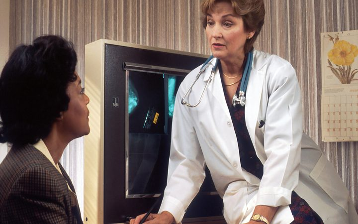

Burnout at historic levels
Clerical burden is now consistently cited as the top driver of physician attrition across health systems.
Physicians spend nearly two hours on documentation for every hour of patient care. NourDoc listens to the natural conversation between doctor and patient and turns it into structured, EMR-ready clinical notes — so physicians can look at their patients again, not their screens.
Administrative burden is now the leading driver of physician burnout — and its cost shows up in clinical, financial and operational lines across every health system.
of documentation for every hour of direct patient care.
of physicians report at least one symptom of burnout tied to clerical load.
lost annually to incomplete documentation, coding errors and denied claims.
preventable clinical errors trace back to incomplete or delayed documentation.
NourDoc listens with consent, understands medical language in context, and produces documentation a physician can trust and sign — without typing a word.
Natural dialogue, on any device, in the exam room.
Medical-grade transcription tuned for clinical speech.
Clinical reasoning identifies findings, history and plan.
Structured, specialty-aware documentation drafted in seconds.
Coding-ready suggestions aligned to the documented encounter.
Delivered directly into your existing EMR or HMIS workflow.
Ambient AI is moving from pilot to standard of care — driven by burnout, rising documentation requirements and the economics of scribing.
Clerical burden is now consistently cited as the top driver of physician attrition across health systems.
Documentation and coding requirements continue to expand, raising the cost of manual note-taking.
Human medical transcription and scribe labor costs are rising faster than reimbursement.

Leading health systems have moved ambient documentation from pilot programs into daily standard practice.
Payers and RCM teams are pushing for documentation that supports accurate, defensible coding the first time.
AI-assisted documentation is becoming an expectation of modern clinical workflow, not a differentiator.
More complete notes, fewer errors, more eye contact with patients.
Cleaner coding, faster claims, lower transcription spend.
Hours returned to clinicians and administrative staff every week.
Undivided attention during the visit, not the keyboard.
Consistent, audit-ready documentation aligned to policy.
"I get home earlier because the note is already done by the time I leave the room."
"My coders finally get documentation detailed enough to code accurately the first time."
"Patients notice. I'm talking to them, not typing while they talk to me."
Start a free trial and see structured documentation from your first patient conversation.